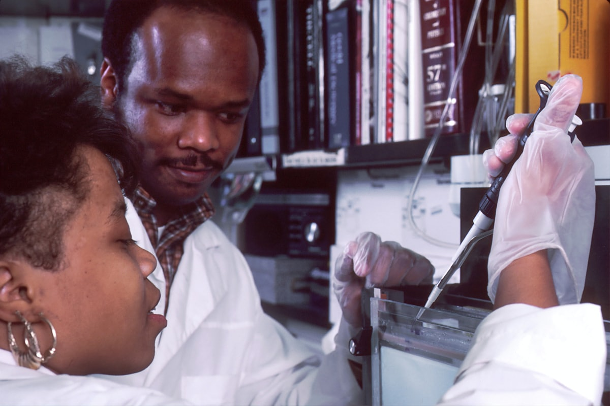

Work that reaches real communities
A career here is a chance to help strengthen how an entire country accesses safe, effective medicine. Our teams work at the point where regulated pharmaceutical supply, evidence-based research and public-health partnership meet.
We are a Nigerian institution with more than three decades of service, and we are growing. As our distribution network and our partnership programmes expand, so does the need for skilled, motivated people who want their work to matter.
Six areas we build careers across
Whatever your background, there is likely a place for your skills in our work. These are the broad areas we recruit and develop people in.
Distribution & Supply Chain
Moving NAFDAC-registered medicines safely and on time, from warehousing and logistics to inventory and last-mile delivery across the country.
Research & Development
Literature review, evidence synthesis and translational research across oncology, regenerative medicine, haematology and global-health policy.
Clinical & Regulatory Affairs
Quality assurance, pharmacovigilance, documentation and regulatory liaison that keep every product and programme compliant.
Community Health & Field Programmes
Field roles that connect our public-health programmes to clinics, hospitals and communities that need safer access to care.
Operations & Quality
Programme management, procurement, standards and the day-to-day systems that let regulated work run reliably at scale.
Corporate, Finance & Administration
Finance, people, partnerships and administration, the backbone that lets our clinical and distribution teams do their best work.

We train the people we hire
You do not need to arrive with every skill. A large part of our work is building local capacity, so we invest in structured training, mentorship and on-the-job development.
As our pilot programmes with the Federal Ministry of Health and international partners move forward, they are expected to open new roles in logistics, clinical support, quality and community health, and we intend to train Nigerians to fill them. Skills built here stay in the country and strengthen its wider health system.
Jobs, skills and healthcare that stay local
Every role we create is also an investment in the country. Our growth is designed to leave lasting value behind.
Job creation
Skilled, regulated employment for the Nigerian public as distribution and programmes scale.
Skills transfer
Training and mentorship that build pharmaceutical and clinical expertise that remains in-country.
Healthcare access
Work that helps safer, more reliable medicine reach clinics and communities nationwide.
Local capacity
Stronger domestic pharmaceutical infrastructure and a healthier contribution to the economy.
Send us your CV
We are always glad to hear from talented people. Share a little about yourself and attach your CV, and our team will reach out when a suitable role opens.